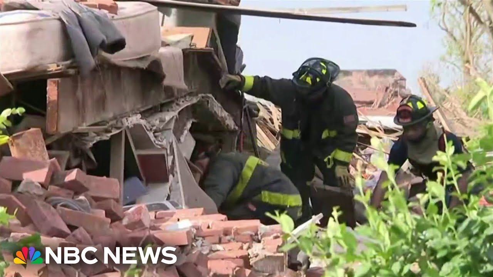

【毁灭性龙卷风袭击圣路易斯】
Summary: A tornado strikes St. Louis, causing widespread destruction, trapping people, and disrupting flights nationwide amid severe storms.
摘要： 龙卷风袭击圣路易斯，造成大面积破坏，人员被困，并在全国范围内因恶劣天气导致航班中断。

⏱️ Estimated Reading Time: 3 min
Hey man, it's a tornado, man.
嘿，老兄，是龙卷风啊。
We're in a tornado.
我们正在龙卷风中。
Oh.
哦。
Tonight, a new round of explosive storms with Missouri in the bullseye.
今晚，新一轮猛烈风暴将密苏里州置于中心。
Hail pummeling the area around St. Louis.
冰雹猛烈袭击圣路易斯周边地区。
And late today, at least one suspected tornado tearing through the heart of the city, wrecking homes, damaging a church, and downing trees.
今天傍晚，至少一场疑似龙卷风席卷城市中心，摧毁房屋，损坏教堂，并刮倒树木。
Rescue crews trying to save a man trapped in the basement of a collapsed building.
救援人员正试图营救一名被困在倒塌建筑地下室中的男子。
Staff huddling in the basement of city hall.
工作人员蜷缩在市政厅的地下室。
Elsewhere, the twister leaving utter devastation.
其他地方，龙卷风造成彻底破坏。
Everything start falling.
所有东西开始倒塌。
The roof just fell in.
屋顶刚刚塌陷。
The lights, the ceiling, all that stuff just fell down.
灯光、天花板，所有东西都掉了下来。
This tap room in St. Louis torn to pieces.
圣路易斯的这家酒吧被撕成碎片。
People inside telling our St. Louis affiliate KSDK they barely escaped with their lives.
里面的人告诉我们的圣路易斯附属台KSDK，他们差点丧命。
This man says someone at the last minute told him to move out of harm's way.
这名男子表示，有人在最后一刻告诉他避开危险。
If he wouldn't have told us to move, we would still been sitting there.
如果他没有叫我们移动，我们可能还坐在那里。
We'd have been probably dead.
我们可能已经死了。
Meanwhile, this apparent tornado crossing a highway in Kentucky and flash flooding sweeping across the Northeast with wild weather wreaking havoc at airports across the country, temporarily delaying or grounding flights in New York, DC, even Minneapolis.
与此同时，这场明显的龙卷风穿过肯塔基州的高速公路，东北部爆发山洪，恶劣天气在全国各地机场造成混乱，暂时延误或停飞纽约、华盛顿甚至明尼阿波利斯的航班。
All of it adding to a chaotic week.
这一切加剧了混乱的一周。
Overnight in Michigan, sparks flying along power lines as violent storms knocked out power for hundreds of thousands.
密歇根州夜间，猛烈风暴导致数十万人断电，电线火花四溅。
Oh my god.
天啊。
Yesterday's tornado outbreak spawning at least 11 reported twisters across the Midwest.
昨天的龙卷风爆发在中西部至少造成11场龙卷风。
Homes and buildings today left torn to shreds.
今天，房屋和建筑被撕成碎片。
It's just a mess.
简直一团糟。
I don't know what I'm going to do at this farm near Milwaukee.
我不知道在密尔沃基附近的这个农场该怎么办。
Here we go.
开始了。
Got one.
抓到一个。
We got one.
我们抓到一个。
Dozens helping to move this herd of cows away from the damage as cleanup gets underway and more storms fire up tonight.
数十人帮忙将这群牛从受损区域转移，清理工作正在进行，今晚还将有更多风暴。
Thanks for watching.
感谢观看。
Stay updated about breaking news and top stories on the NBC News app or follow us on social media.
通过NBC新闻应用或关注我们的社交媒体获取突发新闻和头条故事的最新信息。